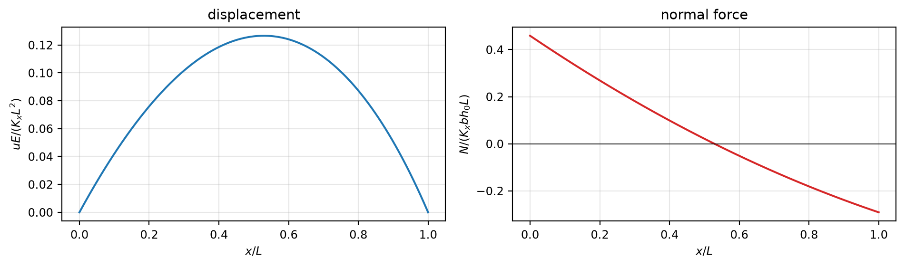
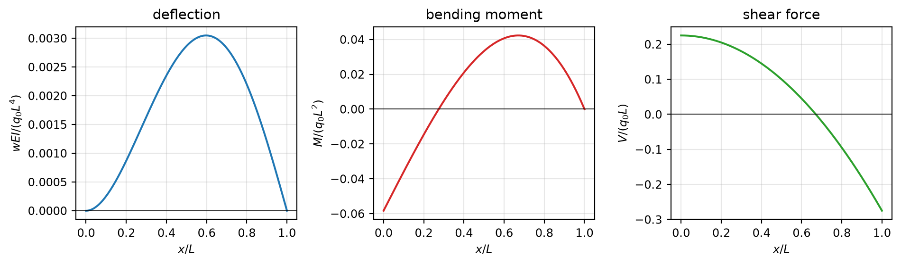
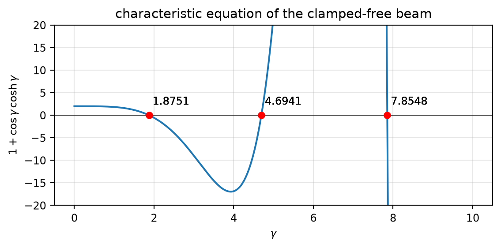
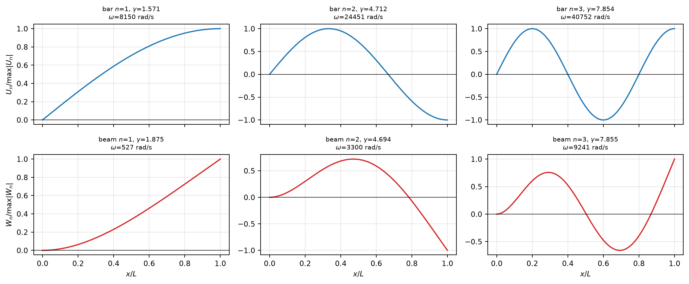

Code
import sympy as sp
import numpy as np
import matplotlib.pyplot as plt
sp.init_printing()
plt.rcParams.update({'figure.figsize': (10, 3), 'font.size': 9,
'axes.grid': True, 'grid.alpha': 0.3})September 21, 2026
An elastic bar with Young’s modulus \(E\) is subjected to a constant volume force \(K_x\). The cross section has constant width \(b\) and linearly varying height \(h(x)=h_0\left(1-\dfrac{x}{2L}\right)\). The length of the bar is \(L\); \(E\), \(b\), \(K_x\), \(L\) are constants. Compute the displacement \(u(x)\).
The bar is clamped at both ends \(\Rightarrow\) \(u(0)=u(L)=0\).
Hint.
\[\int\frac{x+\alpha x^{2}}{1+\beta x}\,dx =\frac{\beta-\alpha}{\beta^{2}}\,x+\frac{\alpha x^{2}}{2\beta} +\frac{(\alpha-\beta)\ln(1+\beta x)}{\beta^{3}}\]
Differential equilibrium equation of the linear elastic bar, eq. (2.4), with \(A=b\,h(x)\) and \(E,b\) constant:
\[\frac{d}{dx}\!\left[EA\frac{du}{dx}\right]=-K_xA, \qquad\left\{\begin{array}{l}A=b\,h(x)\\ E=\text{const}\end{array}\right.\]
Dividing through by the constant \(E\,b\):
\[\frac{d}{dx}\!\left[h(x)\frac{du}{dx}\right]=-\frac{K_x\,h(x)}{E}\]
Note that \(b\) and \(h_0\) have already cancelled: the answer will depend only on the shape of the cross section, not on its size.
Integrating once:
\[\int\frac{d}{dx}\!\left[h\frac{du}{dx}\right]dx=-\int\frac{K_xh}{E}\,dx\]
\[h(x)\frac{du}{dx}=-\int\frac{K_xh}{E}\,dx+C_1\]
Dividing by \(h(x)\) — legitimate because \(h(x)>0\) on \([0,L]\), since \(h(L)=h_0/2\) and the height would only vanish at \(x=2L\):
\[\frac{du}{dx}=-\frac{1}{h(x)}\int\frac{K_xh(x)}{E}\,dx+\frac{C_1}{h(x)}\]
Integrating a second time:
\[u(x)=\int\left[-\frac{1}{h(x)}\int\frac{K_xh(x)}{E}\,dx\right]dx +\int\frac{C_1}{h(x)}\,dx+C_2\qquad ①\]
The inner (load) integral:
\[\int\frac{K_xh(x)}{E}dx=\frac{K_x}{E}\int h_0\!\left(1-\frac{x}{2L}\right)dx =\frac{K_xh_0}{E}\left(x-\frac{x^{2}}{4L}\right)\qquad ②\]
The outer integral — here the hint is used:
\[\int\left[-\frac{1}{h}\int\frac{K_xh}{E}dx\right]dx =-\frac{K_x\,h_0}{E}\int\frac{x-\dfrac{x^{2}}{4L}}{h_0\left(1-\dfrac{x}{2L}\right)}dx =-\frac{K_x}{E}\int\frac{x+\alpha x^{2}}{1+\beta x}\,dx\qquad ③\]
with \(\alpha=-\dfrac{1}{4L}\) and \(\beta=-\dfrac{1}{2L}\).
The three coefficients of the hint, evaluated explicitly (this is where sign errors happen):
\[\frac{\beta-\alpha}{\beta^{2}}=\frac{-\frac{1}{4L}}{\frac{1}{4L^{2}}}=-L\]
\[\frac{\alpha}{2\beta}=\frac{-\frac{1}{4L}}{-\frac{1}{L}}=\frac14\]
\[\frac{\alpha-\beta}{\beta^{3}}=\frac{\frac{1}{4L}}{-\frac{1}{8L^{3}}}=-2L^{2}\]
\[③=-\frac{K_x}{E}\left[-Lx+\frac{x^{2}}{4} -2L^{2}\ln\!\left(1-\frac{x}{2L}\right)\right]\qquad ④\]
The \(C_1\) integral:
\[\int\frac{C_1}{h(x)}dx=\frac{C_1}{h_0}\int\frac{dx}{1-\frac{x}{2L}} =\frac{C_1}{h_0}(-2L)\ln\!\left(1-\frac{x}{2L}\right)\qquad ⑤\]
Replacing ④ and ⑤ in ①:
\[u(x)=-\frac{K_x}{E}\left[-Lx+\frac{x^{2}}{4} -2L^{2}\ln\!\left(1-\frac{x}{2L}\right)\right] -\frac{2LC_1}{h_0}\ln\!\left(1-\frac{x}{2L}\right)+C_2\qquad ⑥\]
\(u(0)=0\): every term contains either \(x\) or \(\ln(1)=0\), hence
\[C_2=0\qquad ⑦\]
\(u(L)=0\), with \(\ln\!\left(\tfrac12\right)=-\ln 2\):
\[-\frac{K_x}{E}\left[-L^{2}+\frac{L^{2}}{4}+2L^{2}\ln 2\right] +\frac{2LC_1}{h_0}\ln 2=0\]
\[\frac{2L\ln 2}{h_0}C_1=\frac{K_x}{E}\left[-\frac{3L^{2}}{4}+2L^{2}\ln 2\right]\]
\[C_1=\frac{K_xh_0L}{E}\left(1-\frac{3}{8\ln 2}\right) \approx 0.45899\,\frac{K_xh_0L}{E}\qquad ⑧\]
Replacing ⑧ in ⑥:
\[-\frac{2LC_1}{h_0}\ln\!\left(1-\frac{x}{2L}\right) =-\left(2-\frac{3}{4\ln 2}\right)\frac{K_xL^{2}}{E}\ln\!\left(1-\frac{x}{2L}\right) =-0.91798\,\frac{K_xL^{2}}{E}\ln\!\left(1-\frac{x}{2L}\right)\]
Pulling out \(-K_x/E\) and collecting with the \(-2L^{2}\ln(\cdot)\) term already in ⑥:
\[u(x)=-\frac{K_x}{E}\left[-Lx+\frac{x^{2}}{4} -\underbrace{(2-0.91798)}_{=\,3/(4\ln 2)\,=\,1.08202} L^{2}\ln\!\left(1-\frac{x}{2L}\right)\right]\]
\[u(x)=-\frac{K_x}{E}\left[-xL+\frac{x^{2}}{4} -1.0820\,L^{2}\ln\!\left(1-\frac{x}{2L}\right)\right]\]
\[u(x)=\frac{K_x}{E}\left[xL-\frac{x^{2}}{4} +\frac{3L^{2}}{4\ln 2}\ln\!\left(1-\frac{x}{2L}\right)\right]\]
This is the answer printed in the lecture notes, \(u=-\frac{K_x}{E}\left[-xL+x^{2}/4-2L^{2}\ln(1-x/(2L))(1+\beta)\right]\), with the exact value of the constant
\[2(1+\beta)=\frac{3}{4\ln 2}=1.08202\ldots\]
\[\beta=\frac{3}{8\ln 2}-1=-0.45899\ldots\approx-0.46\]
Note that this \(\beta\) is not the \(\beta=-1/(2L)\) of the hint — the notes reuse the same letter for two different quantities.
The script follows exactly the same steps: two integrations, then the two boundary conditions.
Caveat: sympy returns the antiderivative of ⑤ as \(\ln(x-2L)\), which is complex for \(x<2L\). The substitution log(x - 2*L) -> log(2*L - x) restores the real branch valid on \([0,L]\). Solving with dsolve directly gives the same answer with an extra I*pi, which is a constant and is absorbed by \(C_2\).
x, L, E, b, h0, Kx = sp.symbols('x L E b h_0 K_x', positive=True)
C1, C2 = sp.symbols('C1 C2')
h = h0*(1 - x/(2*L)) # height h(x), from 1. Equilibrium
A = b*h # cross-section area A(x)
# --- 2. Integrate: first integration of d/dx[h u'] = -(Kx/E) h -------------
hu_p = -sp.integrate(Kx*h/E, x) + C1 # = h(x) u'(x)
u_p = sp.simplify(hu_p/h) # u'(x) (legal: h > 0 on [0, L])
print("u'(x)")
u_pu'(x)\(\displaystyle \frac{4 C_{1} E L - 4 K_{x} L h_{0} x + K_{x} h_{0} x^{2}}{2 E h_{0} \left(2 L - x\right)}\)
\(\displaystyle \frac{C_{2} E h_{0} + \frac{K_{x} h_{0} x \left(4 L - x\right)}{4} - 2 L \left(C_{1} E - K_{x} L h_{0}\right) \log{\left(2 L - x \right)}}{E h_{0}}\)
C1\(\displaystyle \frac{K_{x} L h_{0} \left(-3 + \log{\left(256 \right)}\right)}{8 E \log{\left(2 \right)}}\)
C2\(\displaystyle - \log{\left(\left(2 L\right)^{\frac{3 K_{x} L^{2}}{4 E \log{\left(2 \right)}}} \right)}\)
Why is \(C_2\neq0\) here? Because
sympywrites the logarithm as \(\ln(2L-x)\) instead of \(\ln\!\left(1-\frac{x}{2L}\right)\). The two differ by the constant \(\ln(2L)\), which the solver dumps into \(C_2\). The split between \(C_1\) and \(C_2\) is therefore different from the hand derivation, but \(C_1\) is identical and so is the final \(u(x)\) — as the check below confirms. Writing the logarithm in the normalised form, as in step ⑤ above, is what makes \(C_2=0\) and keeps the algebra light.
\(\displaystyle - \frac{3 K_{x} L^{2} \log{\left(L \right)}}{4 E \log{\left(2 \right)}} + \frac{3 K_{x} L^{2} \log{\left(2 L - x \right)}}{4 E \log{\left(2 \right)}} - \frac{3 K_{x} L^{2}}{4 E} + \frac{K_{x} L x}{E} - \frac{K_{x} x^{2}}{4 E}\)
difference u_sympy - u_notes : 0# --- plot (normalised) --------------------------------------------------------
xi = np.linspace(0, 1, 400)
u_n = xi - xi**2/4 + (3/(4*np.log(2)))*np.log(1 - xi/2) # u*E/(Kx*L^2)
N_n = 1 - 3/(8*np.log(2)) - (xi - xi**2/4) # N/(Kx*b*h0*L)
fig, ax = plt.subplots(1, 2)
ax[0].plot(xi, u_n); ax[0].set_title('displacement')
ax[0].set_xlabel('$x/L$'); ax[0].set_ylabel(r'$uE/(K_xL^2)$')
ax[1].plot(xi, N_n, 'C3'); ax[1].axhline(0, color='k', lw=.6)
ax[1].set_title('normal force')
ax[1].set_xlabel('$x/L$'); ax[1].set_ylabel(r'$N/(K_xbh_0L)$')
plt.tight_layout(); plt.show()
A beam with bending stiffness \(EI\) and length \(L\) is subjected to the force per unit length \(q(x)=q_0x/L\). Compute the deflection \(w(x)\) using Euler–Bernoulli beam theory.
Supports (read them off the figure before touching the equation):
| end | support | conditions |
|---|---|---|
| \(x=0\) | clamped (hatched wall) | \(w(0)=0\), \(w'(0)=0\) |
| \(x=L\) | roller | \(w(L)=0\), \(M(L)=0\) |
Differential equilibrium equation, eq. (2.15):
\[EI\frac{d^{4}w}{dx^{4}}=q_0\frac{x}{L}\]
\[\frac{d^{4}w}{dx^{4}}=\frac{q_0}{EI\,L}\,x\]
Integrating four times in a row:
\[\frac{d^{3}w}{dx^{3}}=\frac{q_0}{EIL}\frac{x^{2}}{2}+C_1\]
\[\frac{d^{2}w}{dx^{2}}=\frac{q_0}{EIL}\frac{x^{3}}{6}+C_1x+C_2\]
\[\frac{dw}{dx}=\frac{q_0}{EIL}\frac{x^{4}}{24}+C_1\frac{x^{2}}{2}+C_2x+C_3\]
\[w(x)=\frac{q_0}{EI\,L}\frac{x^{5}}{120} +C_1\frac{x^{3}}{6}+C_2\frac{x^{2}}{2}+C_3x+C_4\qquad ①\]
The constants have a physical meaning: comparing with (2.18)–(2.19), \(EI\,C_1=-V(0)\) and \(EI\,C_2=-M(0)\).
Clamped end.
\[w(0)=0\quad\Longrightarrow\quad C_4=0\qquad ②\]
\[w'(0)=\left(\frac{q_0}{EIL}\frac{x^{4}}{24}+C_1\frac{x^{2}}{2}+C_2x+C_3\right)_{x=0}=0\]
\[\Longrightarrow\quad C_3=0\qquad ③\]
Roller.
\[M(L)=0\;\Longrightarrow\;-EI\,w''(L)=0,\qquad w''(x)=\frac{q_0}{EIL}\frac{x^{3}}{6}+C_1x+C_2\]
\[\frac{q_0}{EIL}\frac{L^{3}}{6}+C_1L+C_2=0\]
\[\Longrightarrow\quad C_2=-C_1L-\frac{q_0L^{2}}{6EI}\qquad ④\]
\[w(L)=0\;\Longrightarrow\; \frac{q_0}{EIL}\frac{L^{5}}{120}+C_1\frac{L^{3}}{6}+C_2\frac{L^{2}}{2}=0\]
Inserting ④:
\[\frac{q_0L^{4}}{120EI}+C_1\frac{L^{3}}{6} +\frac{L^{2}}{2}\left(-C_1L-\frac{q_0L^{2}}{6EI}\right)=0\]
\[\frac{q_0L^{4}}{120EI}-\frac{L^{3}}{3}C_1-\frac{q_0L^{4}}{12EI}=0\]
\[\frac{L^{3}}{3}C_1=\frac{q_0L^{4}}{EI}\left(\frac{1}{120}-\frac{1}{12}\right) =-\frac{9q_0L^{4}}{120EI}\]
\[C_1=-\frac{27q_0L}{120EI}=-\frac{9q_0L}{40EI}\qquad ⑤\]
and back into ④:
\[C_2=\frac{9q_0L^{2}}{40EI}-\frac{q_0L^{2}}{6EI}=\frac{(27-20)q_0L^{2}}{120EI} =\frac{7q_0L^{2}}{120EI}\qquad ⑥\]
With ②–⑥, eq. ① becomes
\[w(x)=\frac{q_0L^{4}}{EI}\left[\frac{1}{120}\left(\frac{x}{L}\right)^{5} -\frac{3}{80}\left(\frac{x}{L}\right)^{3} +\frac{7}{240}\left(\frac{x}{L}\right)^{2}\right]\]
\[w(x)=\frac{q_0\,x^{2}(x-L)\left(2x^{2}+2Lx-7L^{2}\right)}{240\,EI\,L}\]
and the internal forces follow immediately, with \(\xi=x/L\):
\[\frac{M(x)}{q_0L^{2}}=-\left[\frac{\xi^{3}}{6}-\frac{9}{40}\xi+\frac{7}{120}\right]\]
\[\frac{V(x)}{q_0L}=-\left[\frac{\xi^{2}}{2}-\frac{9}{40}\right]\]
\(\displaystyle C_{1} + C_{2} x + C_{3} x^{2} + C_{4} x^{3} + \frac{q_{0} x^{5}}{120 EI L}\)
# --- 3. Boundary conditions: w(0)=w'(0)=0 (clamped), M(L)=w(L)=0 (roller) ----
M = -EI*sp.diff(W, x, 2) # bending moment, M = -EI w''
V = sp.diff(M, x) # shear force, V = dM/dx
bc = [W.subs(x, 0), # w(0) = 0 clamped
sp.diff(W, x).subs(x, 0), # w'(0) = 0 clamped
M.subs(x, L), # M(L) = 0 roller
W.subs(x, L)] # w(L) = 0 roller
sol = sp.solve(bc, C, dict=True)[0]
for k in C:
sp.simplify(sol[k])Careful with the naming.
dsolvenumbers its constants by increasing power of \(x\), i.e. \(\texttt{C1}+\texttt{C2}\,x+\texttt{C3}\,x^{2}+\texttt{C4}\,x^{3}\), which is the opposite of the hand derivation. The correspondence is\[\texttt{C4}=\frac{C_1}{6}=-\frac{3q_0L}{80EI},\qquad \texttt{C3}=\frac{C_2}{2}=\frac{7q_0L^{2}}{240EI}\]
\[\texttt{C2}=C_3=0,\qquad \texttt{C1}=C_4=0\]
\(\displaystyle \frac{q_{0} x^{2} \left(L^{2} \left(7 L - 9 x\right) + 2 x^{3}\right)}{240 EI L}\)
# --- max deflection and inflection point -------------------------------------
xi = sp.symbols('xi', positive=True)
wn = xi**5/120 - 3*xi**3/80 + 7*xi**2/240 # w*EI/(q0 L^4)
xi_max = sp.nsolve(sp.diff(wn, xi), xi, 0.6)
print(f"w' = 0 at xi = {float(xi_max):.4f}, w_max = {float(wn.subs(xi, xi_max)):.3e} * q0*L^4/EI")
Mn = -(xi**3/6 - sp.Rational(9, 40)*xi + sp.Rational(7, 120))
print(f"M = 0 at xi = {float(sp.nsolve(Mn, xi, 0.3)):.4f} (inflection point)")w' = 0 at xi = 0.5975, w_max = 3.048e-03 * q0*L^4/EI
M = 0 at xi = 0.2746 (inflection point)# --- plot ----------------------------------------------------------------------
t = np.linspace(0, 1, 400)
w_n = t**5/120 - 3*t**3/80 + 7*t**2/240
M_n = -(t**3/6 - 9*t/40 + 7/120)
V_n = -(t**2/2 - 9/40)
fig, ax = plt.subplots(1, 3)
for a, y, ttl, lab, c in zip(ax, [w_n, M_n, V_n],
['deflection', 'bending moment', 'shear force'],
[r'$wEI/(q_0L^4)$', r'$M/(q_0L^2)$', r'$V/(q_0L)$'],
['C0', 'C3', 'C2']):
a.plot(t, y, c); a.axhline(0, color='k', lw=.6)
a.set_title(ttl); a.set_xlabel('$x/L$'); a.set_ylabel(lab)
plt.tight_layout(); plt.show()
Compute the value of \(\gamma\) that determines the first eigenfrequency of the clamped–free bar/beam in the figure.
(a) for the bar problem (b) for Euler–Bernoulli beam theory (c) for \(b=h=0.1\) m, \(L=1\) m, \(E=210\cdot10^{9}\) Pa, \(\rho=7800\) kg/m³, determine the numerical eigenfrequencies of both models.
From eq. (2.5) with \(E,A,\rho\) constant and \(K_x=0\):
\[\frac{\partial^{2}u}{\partial x^{2}}-\frac{\rho}{E}\ddot u=0 \qquad (2.6)\]
Separation of variables, \(u(x,t)=U(x)\sin(\omega t)\), gives \(u''=U''\sin(\omega t)\) and \(\ddot u=-U\omega^{2}\sin(\omega t)\) (eq. 2.7), so
\[U''+\frac{\rho}{E}\omega^{2}U=0 \qquad (2.8)\]
with general solution
\[U(x)=C_1\sin\!\left(\frac{\gamma x}{L}\right)+C_2\cos\!\left(\frac{\gamma x}{L}\right), \qquad \gamma=\sqrt{\frac{\rho}{E}}\,\omega L \qquad (2.9)\]
Boundary conditions: \(U(0)=0\) gives \(C_2=0\); \(N(L)=0\Rightarrow EA\,U'(L)=0\) gives \(U'(L)=0\):
\[U'(x)=\frac{\gamma}{L}C_1\cos\!\left(\frac{\gamma x}{L}\right)\]
\[U'(L)=\frac{\gamma}{L}C_1\cos\gamma=0\]
For a non-trivial solution (\(C_1\neq0\)):
\[\cos\gamma=0 \qquad\Rightarrow\qquad \gamma=\frac{(2n+1)\pi}{2},\quad n=0,1,2,\dots\]
\[n=0:\quad\gamma_1=\frac{\pi}{2}\]
with \(\omega_n=\dfrac{\gamma_n}{L}\sqrt{\dfrac{E}{\rho}}\) and modes \(U_n=C_1\sin\!\left(\frac{\gamma_nx}{L}\right)\). The value \(\gamma_1=\pi/2\) is exact — half that of the clamped–clamped bar of Example 2.1, i.e. the free bar is softer.
Differential equation for equilibrium, eq. (2.22), with \(w(x,t)=W(x)\sin(\omega t)\) and \(q=0\):
\[EI\frac{\partial^{4}w}{\partial x^{4}}+\rho A\ddot w=q(x,t)\]
\[\frac{d^{4}W}{dx^{4}}-\omega^{2}\frac{\rho A}{EI}W=0 \qquad (2.25)\]
\[W(x)=C_1\sin\!\left(\frac{\gamma x}{L}\right)+C_2\cos\!\left(\frac{\gamma x}{L}\right) +C_3\sinh\!\left(\frac{\gamma x}{L}\right)+C_4\cosh\!\left(\frac{\gamma x}{L}\right)\] \[ \frac{\gamma}{L}=\sqrt[4]{\omega^{2}\frac{\rho A}{EI}} \qquad (2.26)\]
Clamped end. \(W(0)=0\) gives
\[C_2+C_4=0 \qquad ①\]
\(W'(0)=0\) gives
\[C_1+C_3=0 \qquad ②\]
Free end. Zero bending moment, \(M=-EI\,W''\), at \(x=L\) gives
\[-C_1\sin\gamma-C_2\cos\gamma+C_3\sinh\gamma+C_4\cosh\gamma=0 \qquad ③\]
Zero shear force, \(V=-EI\,W'''\), at \(x=L\) gives
\[-C_1\cos\gamma+C_2\sin\gamma+C_3\cosh\gamma+C_4\sinh\gamma=0 \qquad ④\]
Elimination. From ① and ②: \(C_4=-C_2\), \(C_3=-C_1\). Substituting into ③:
\[C_2\left[\cos\gamma+\cosh\gamma\right]=-C_1\left[\sin\gamma+\sinh\gamma\right]\]
\[C_2=-C_1\,\frac{\sin\gamma+\sinh\gamma}{\cos\gamma+\cosh\gamma} \qquad ⑤\]
Substituting ⑤ (and \(C_4=-C_2\), \(C_3=-C_1\)) into ④, then simplifying with \(\sin^{2}\gamma+\cos^{2}\gamma=1\) and \(\cosh^{2}\gamma-\sinh^{2}\gamma=1\):
\[2+2\cos\gamma\cosh\gamma=0\]
\[\cos\gamma\,\cosh\gamma=-1\]
\[\gamma_1=1.87510,\quad\gamma_2=4.69409,\quad\gamma_3=7.85476\]
There is no closed form; solve numerically with python:
For large \(n\), \(\cosh\gamma\to\infty\) forces \(\cos\gamma\to0\), so \(\gamma_n\to(2n-1)\pi/2\) — the same values as the bar. Already \(\gamma_3=7.85476\) against \(5\pi/2=7.85398\).
\[b=h=0.1\ \text{m}\ \Rightarrow\ A=bh=0.01\ \text{m}^{2}, \qquad I=\frac{bh^{3}}{12}=8.3333\cdot10^{-6}\ \text{m}^{4}\]
Beam, from \(\gamma/L=\sqrt[4]{\omega^{2}\rho A/(EI)}\):
\[\omega_{\text{beam}}=\sqrt{\frac{\gamma^{4}EI}{\rho AL^{4}}}\]
\[\omega_{\text{beam}}\approx527\ \text{rad/s}\]
Bar, from \(\gamma=\sqrt{\rho/E}\,\omega L\):
\[\omega_{\text{bar}}=\frac{\gamma}{L}\sqrt{\frac{E}{\rho}}\]
\[\omega_{\text{bar}}\approx8150\ \text{rad/s}\]
Watch out. The most common error is using \(\gamma^{2}\) instead of \(\gamma^{4}\) under the square root for the beam. A dimensional check of \(\sqrt{EI/(\rho A)}\) (units m²/s) settles it. With \(L=1\) m the error is invisible in the final number, which is exactly why students copy it.
Instead of eliminating the constants by hand, the script builds the homogeneous system \(\mathbf{A}(\gamma)\mathbf{C}=\mathbf{0}\). Nontrivial \(\mathbf{C}\) requires \(\det\mathbf{A}(\gamma)=0\): a transcendental eigenvalue problem for \(\gamma\), with infinitely many roots \(\gamma_n\) corresponding to the eigenfrequencies \(\omega_n\). Shorter and much less error-prone than eliminating \(C_1,\dots,C_n\) by hand.
Bar: \[ A(\gamma)\,\mathbf{C} = \begin{bmatrix} 0 & 1 \\ \dfrac{\gamma}{L}\cos\gamma & -\dfrac{\gamma}{L}\sin\gamma \end{bmatrix} \begin{bmatrix} C_1 \\ C_2 \end{bmatrix} = \begin{bmatrix} 0 \\ 0 \end{bmatrix} \]
Euler-Bernoulli beam: \[ A(\gamma)\,\mathbf{C} = \begin{bmatrix} 0 & 1 & 0 & 1 \\ \dfrac{\gamma}{L} & 0 & \dfrac{\gamma}{L} & 0 \\ -\dfrac{\gamma^{2}}{L^{2}}\sin\gamma & -\dfrac{\gamma^{2}}{L^{2}}\cos\gamma & \dfrac{\gamma^{2}}{L^{2}}\sinh\gamma & \dfrac{\gamma^{2}}{L^{2}}\cosh\gamma \\ -\dfrac{\gamma^{3}}{L^{3}}\cos\gamma & \dfrac{\gamma^{3}}{L^{3}}\sin\gamma & \dfrac{\gamma^{3}}{L^{3}}\cosh\gamma & \dfrac{\gamma^{3}}{L^{3}}\sinh\gamma \end{bmatrix} \begin{bmatrix} C_1 \\ C_2 \\ C_3 \\ C_4 \end{bmatrix} = \begin{bmatrix} 0 \\ 0 \\ 0 \\ 0 \end{bmatrix} \]
g, x, L = sp.symbols('gamma x L', positive=True)
C1, C2, C3, C4 = sp.symbols('C1 C2 C3 C4')
def char_eq(cs, eqs):
# determinant of the homogeneous system A(gamma) C = 0
A = sp.Matrix([[sp.expand(e).coeff(c) for c in cs] for e in eqs])
return A, sp.simplify(sp.expand_trig(sp.expand(A.det())))
# ---------- (a) bar : U(0) = 0 , N(L) = EA U'(L) = 0 --------------------
U = C1*sp.sin(g*x/L) + C2*sp.cos(g*x/L)
eqs_bar = [U.subs(x, 0), sp.diff(U, x).subs(x, L)]
A_bar, det_bar = char_eq((C1, C2), eqs_bar)
print("characteristic equation:", det_bar, "= 0 -> cos(gamma) = 0")
print("gamma_1 = pi/2 =", float(sp.pi/2))
det_barcharacteristic equation: -gamma*cos(gamma)/L = 0 -> cos(gamma) = 0
gamma_1 = pi/2 = 1.5707963267948966\(\displaystyle - \frac{\gamma \cos{\left(\gamma \right)}}{L}\)
# ---------- (b) beam : W(0)=W'(0)=0 , M(L)=0 , V(L)=0 ---------------------
W = (C1*sp.sin(g*x/L) + C2*sp.cos(g*x/L)
+ C3*sp.sinh(g*x/L) + C4*sp.cosh(g*x/L))
eqs_beam = [W.subs(x, 0), # W(0) = 0
sp.diff(W, x).subs(x, 0), # W'(0) = 0
sp.diff(W, x, 2).subs(x, L),# M(L) = 0 -> W''(L) = 0
sp.diff(W, x, 3).subs(x, L)]# V(L) = 0 -> W'''(L) = 0
A_beam, det_beam = char_eq((C1, C2, C3, C4), eqs_beam)
print("characteristic equation (determinant):", det_beam, "= 0")
# the form printed in the lecture notes reduces to the same equation
notes = (sp.sinh(g)**2 - sp.sin(g)**2) - (sp.cosh(g) + sp.cos(g))**2
print("form printed in the notes :",
sp.simplify(sp.expand_trig(sp.expand(notes))), "= 0")
det_beamcharacteristic equation (determinant): gamma**6*(2*cos(gamma)*cosh(gamma) + 2)/L**6 = 0
form printed in the notes : -2*cos(gamma)*cosh(gamma) - 2 = 0\(\displaystyle \frac{\gamma^{6} \left(2 \cos{\left(\gamma \right)} \cosh{\left(\gamma \right)} + 2\right)}{L^{6}}\)
roots of cos(g)*cosh(g) = -1 : [1.8751, 1.8751, 1.8751, 4.69409, 4.69409, 4.69409, 7.85476, 7.85476, 7.85476]# ---------- (c) numerical values -------------------------------------------
b = h = 0.1 # m
Lv = 1.0 # m
Ev = 210e9 # Pa
rho = 7800.0 # kg/m^3
A = b*h
I = b*h**3/12
print(f"A = {A} m^2, I = {I:.4e} m^4")
om_bar = (np.pi/2/Lv)*np.sqrt(Ev/rho) # omega = (gamma/L) * sqrt(E/rho)
om_beam = (roots[0]/Lv)**2*np.sqrt(Ev*I/(rho*A)) # omega = (gamma/L)^2 * sqrt(EI/(rho A))
print(f"omega_bar = {om_bar:8.1f} rad/s ({om_bar/2/np.pi:7.1f} Hz)")
print(f"omega_beam = {om_beam:8.1f} rad/s ({om_beam/2/np.pi:7.1f} Hz)")
print(f"ratio omega_bar / omega_beam = {om_bar/om_beam:.2f}")A = 0.010000000000000002 m^2, I = 8.3333e-06 m^4
omega_bar = 8150.5 rad/s ( 1297.2 Hz)
omega_beam = 526.7 rad/s ( 83.8 Hz)
ratio omega_bar / omega_beam = 15.48# --- plot of the characteristic function ------------------------------------
gg = np.linspace(0, 10, 2000)
f = 1 + np.cos(gg)*np.cosh(gg)
fig, ax = plt.subplots(figsize=(6, 3))
ax.plot(gg, f); ax.axhline(0, color='k', lw=.6); ax.set_ylim(-20, 20)
for r in roots:
ax.plot(r, 0, 'ro', ms=5)
ax.annotate(f'{r:.4f}', (r, 0), textcoords='offset points', xytext=(3, 9))
ax.set_xlabel(r'$\gamma$'); ax.set_ylabel(r'$1+\cos\gamma\,\cosh\gamma$')
ax.set_title('characteristic equation of the clamped-free beam')
plt.tight_layout(); plt.show()
Nmodes = 4
seeds = [(2*n - 1)*sp.pi/2 for n in range(1, Nmodes + 1)]
gamma_beam = [float(sp.nsolve(sp.cos(g)*sp.cosh(g) + 1, g, float(s))) for s in seeds]
gamma_bar = [float((2*n - 1)*sp.pi/2) for n in range(1, Nmodes + 1)] # exact, cos(gamma)=0
print("gamma_bar :", [round(v, 4) for v in gamma_bar])
print("gamma_beam:", [round(v, 4) for v in gamma_beam])gamma_bar : [1.5708, 4.7124, 7.854, 10.9956]
gamma_beam: [1.8751, 4.6941, 7.8548, 10.9955]# Bar: U(0)=0 forces C2=0 -> U_n(x) = sin(gamma_n x/L)
def bar_mode(n, xi):
gn = gamma_bar[n-1]
Un = np.sin(gn*xi)
return Un / np.max(np.abs(Un))
# Beam: from the BCs, C4=-C2, C3=-C1, C2/C1 = -(sin(g)+sinh(g))/(cos(g)+cosh(g))
# (derived from M(L)=0; V(L)=0 is then automatically satisfied at gamma_n)
def beam_mode(n, xi):
gn = gamma_beam[n-1]
sigma = (np.sin(gn) + np.sinh(gn)) / (np.cos(gn) + np.cosh(gn))
Wn = (np.sin(gn*xi) - np.sinh(gn*xi)) - sigma*(np.cos(gn*xi) - np.cosh(gn*xi))
return Wn / np.max(np.abs(Wn))Finally, we compare the mode shapes of the bar and the beam for the first four eigenfrequencies:
# --- mode shapes for the first four eigenfrequencies --------------------------
xi = np.linspace(0, 1, 400)
fig, ax = plt.subplots(2, (Nmodes-1), figsize=(12, 5), sharex=True)
for n in range(1, Nmodes):
gnb, gnm = gamma_bar[n-1], gamma_beam[n-1]
om_bar_n = (gnb/Lv) * np.sqrt(Ev/rho)
om_beam_n = (gnm/Lv)**2 * np.sqrt(Ev*I/(rho*A))
ax[0, n-1].plot(xi, bar_mode(n, xi), 'C0')
ax[0, n-1].axhline(0, color='k', lw=.6)
ax[0, n-1].set_title(f'bar $n$={n}, $\\gamma$={gnb:.3f}\n$\\omega$={om_bar_n:.0f} rad/s',
fontsize=8)
ax[1, n-1].plot(xi, beam_mode(n, xi), 'C3')
ax[1, n-1].axhline(0, color='k', lw=.6)
ax[1, n-1].set_title(f'beam $n$={n}, $\\gamma$={gnm:.3f}\n$\\omega$={om_beam_n:.0f} rad/s',
fontsize=8)
ax[1, n-1].set_xlabel('$x/L$')
ax[0, 0].set_ylabel('$U_n/\\max|U_n|$')
ax[1, 0].set_ylabel('$W_n/\\max|W_n|$')
plt.tight_layout(); plt.show()
Real eigenfrequencies are hundreds to thousands of rad/s — far too fast to watch oscillate frame by frame — so the animation time below is slowed down uniformly, purely for visualization. A single, shared scale factor is applied to every \(\omega_n\) (all three bar modes and all three beam modes), so the relative speeds you see — including the bar vibrating noticeably faster than the beam — still match the real physics.